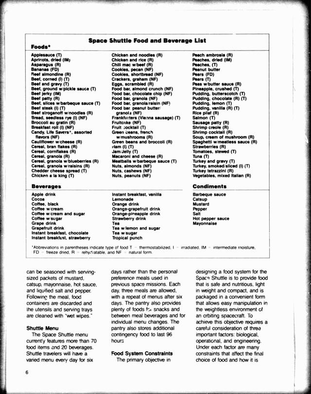

Use Hub models on your own data
Run a model over your whole dataset, or fine-tune it on your own examples. Each command starts a paid batch job on Hugging Face Jobs and saves the results to the Hub. There is nothing to clone.
Read seven scanned NASA pages with GLM-OCR and save the text to a new public dataset on your account. Add --private to keep it private.
hf jobs uv run \
https://huggingface.co/datasets/uv-scripts/ocr/raw/main/glm-ocr.py \
uv-scripts/ocr-demo your-username/ocr-demo-results
Space Shuttle Food and Beverage List Foods* Applesauce (T) Apricots, dried (IM) Asparagus (R) Bananas (FD) Beef almondine (R) Beef, corned (I) (T) Beef and gravy (T) Beef, ground w/pickle sauce (T) Beef jerky (IM) Beef patty (R) Beef, slices w/barbeque sauce (T) Beef steak (I) (T) Beef stroganoff w/noodles (R) Bread, seedless rye (I) (NF) Broccoli au gratin (R) Breakfast roll (I) (NF) Candy, Life Savers*, assorted flavors (NF) Cauliflower w/cheese (R) Cereal, bran flakes (R) Cereal, cornflakes (R) Cereal, granola (R) Cereal, granola w/blueberries (R) Cereal, granola w/raisins (R) Cheddar cheese spread (T) Chicken a la king (T) Chicken and noodles (R) Chicken and rice (R) Chili mac w/beef (R) Cookies, pecan (NF) Cookies, shortbread (NF) Crackers, graham (NF) Eggs, scrambled (R) Food bar, almond crunch (NF) Food bar, chocolate chip (NF) Food bar, granola (NF) Food bar, granola/raisin (NF) Food bar, peanut butter/granola (NF) Frankfurters (Vienna sausage) (T) Fruitcake (NF) Fruit cocktail (T) Green beans, french w/mushrooms (R) Green beans and broccoli (R) Ham (I) (T) Jam/Jelly (T) Macaroni and cheese (R) Meatballs w/barbeque sauce (T) Nuts, almonds (NF) Nuts, cashews (NF) Nuts, peanuts (NF) Peach ambrosia (R) Peaches, dried (IM) Peaches, (T) Peanut butter Pears (FD) Pears (T) Peas w/butter sauce (R) Pineapple, crushed (T) Pudding, butterscotch (T) Pudding, chocolate (R) (T) Pudding, lemon (T) Pudding, vanilla (R) (T) Rice pilaf (R) Salmon (T) Sausage patty (R) Shrimp creole (R) Shrimp cocktail (R) Soup, cream of mushroom (R) Spaghetti w/meatless sauce (R) Strawberries (R) Tomatoes, stewed (T) Tuna (T) Turkey and gravy (T) Turkey, smoked/sliced (I) (T) Turkey tetrazzini (R) Vegetables, mixed Italian (R) Beverages Apple drink Cocoa Coffee, black Coffee w/cream Coffee w/cream and sugar Coffee w/sugar Grape drink Grapefruit drink Instant breakfast, chocolate Instant breakfast, strawberry Instant breakfast, vanilla Lemonade Orange drink Orange-grapefruit drink Orange-pineapple drink Strawberry drink Tea Tea w/lemon and sugar Tea w/sugar Tropical punch Condiments Barbeque sauce Catsup Mustard Pepper Salt Hot pepper sauce Mayonnaise *Abbreviations in parentheses indicate type of food T = thermostabilized, I = irradiated, IM = intermediate moisture, FD = freeze dried, R = rehydratable, and NF = natural form. Shuttle Menu The Space Shuttle menu currently features more than 70 food items and 20 beverages. Shuttle travelers will have a varied menu every day for six days rather than the personal preference meals used in previous space missions. Each day, three meals are allowed, with a repeat of menus after six days. The pantry also provides plenty of foods for snacks and between meal beverages and for individual menu changes. The pantry also stores additional contingency food to last 96 hours. Food System Constraints The primary objective in designing a food system for the Space Shuttle is to provide food that is safe and nutritious, light in weight and compact, and is packaged in a convenient form that allows easy manipulation in the weightless environment of an orbiting spacecraft. To achieve this objective requires a careful consideration of three important factors: biological, operational, and engineering. Under each factor are many constraints that affect the final choice of food and how it is
Our run: davanstrien/ocr-demo-results. 7 pages, 2.4 minutes of processing on a10g-small, after a few minutes of setup.
Transcribe four minutes of a NASA podcast, with speaker tags and word timestamps, into your own Bucket.
hf buckets create your-username/transcripts --private
hf jobs uv run --timeout 45m \
-v hf://buckets/uv-scripts/transcription-demo/podcast:/input:ro \
-v hf://buckets/your-username/transcripts/podcast:/output \
https://huggingface.co/datasets/uv-scripts/transcription/raw/main/nemotron-transcribe.py \
/input /output --timestamps<spk:0> Jim, thank you so much for coming on the podcast today. ... <spk:3> It is, uh, the mission control room, of course, is now open for business ...
Our run: about 7.5 minutes on rtx-pro-6000, about $0.34. Most of that was model setup.
Embed the first 100 IMDb reviews and save them as a private dataset.
hf jobs uv run --flavor l4x1 -s HF_TOKEN \
https://huggingface.co/datasets/uv-scripts/embeddings/raw/main/generate-embeddings.py \
stanfordnlp/imdb your-username/imdb-embeddings \
--column text --max-samples 100 --privateOne L4 GPU embeds about 900 rows per second with all-MiniLM-L6-v2.
You need the hf CLI (1.32 or newer), a login and pay-as-you-go credit. Add --dry-run to see the GPU and settings without starting a job.
Find your model
Replace the capitalised placeholders and your-username. Check the script if you're unsure what a value should be.
No recipe matches that search.
OCR
allenai/olmOCR-2-7B-1025-FP8command ready · a10g-small
olmocr2-vllm.pycommand ready · a10g-smallConvert document images to markdown using olmOCR-2 with vLLM.
hf jobs uv run \ https://huggingface.co/datasets/uv-scripts/ocr/raw/main/olmocr2-vllm.py \ INPUT_DATASET OUTPUT_DATASETATH-MaaS/OvisOCR2command ready · a10g-small
ovis-ocr2.pycommand ready · a10g-smallConvert document images to markdown using OvisOCR2 with vLLM.
hf jobs uv run \ https://huggingface.co/datasets/uv-scripts/ocr/raw/main/ovis-ocr2.py \ INPUT_DATASET OUTPUT_DATASET --batch-size 161 more recipe
ovis-ocr2-saturate.pycommand ready · a10g-smallConvert document images to markdown using OvisOCR2 via saturate.
hf jobs uv run \ https://huggingface.co/datasets/uv-scripts/ocr/raw/main/ovis-ocr2-saturate.py \ <INPUT_DATASET> <OUTPUT_DATASET>baidu/Qianfan-OCRcommand ready · a10g-small
qianfan-ocr.pycommand ready · a10g-smallConvert document images to markdown using Qianfan-OCR with vLLM.
hf jobs uv run \ https://huggingface.co/datasets/uv-scripts/ocr/raw/main/qianfan-ocr.py \ INPUT_DATASET OUTPUT_DATASET --max-samples 10baidu/Unlimited-OCRcommand ready · a10g-small
unlimited-ocr-vllm.pycommand ready · a10g-smallConvert document images to markdown using Baidu Unlimited-OCR with vLLM.
hf jobs uv run \ https://huggingface.co/datasets/uv-scripts/ocr/raw/main/unlimited-ocr-vllm.py \ your-input-dataset your-output-dataset --max-samples 10baidu/Unlimited-OCR-2command ready · rtx-pro-6000
unlimited-ocr2.pycommand ready · rtx-pro-6000OCR whole documents (book volumes, folders of scans) with Baidu Unlimited-OCR-2.
hf jobs uv run \ https://huggingface.co/datasets/uv-scripts/ocr/raw/main/unlimited-ocr2.py \ "hf://buckets/biglam/britannica/source/pages/1771EncyclopediaBritannicaNLS/*.jp2" \ <user>/britannica-17712 more recipes
unlimited-ocr2-live.pycommand ready, experimental · rtx-pro-6000unlimited-ocr2.py with a live view you can watch (and screen-record) while the Job runs.
hf jobs uv run \ https://huggingface.co/datasets/uv-scripts/ocr/raw/main/unlimited-ocr2-live.py \ "hf://buckets/biglam/britannica/source/pages/1771EncyclopediaBritannicaNLS/*.jp2" \ <user>/britannica-1771 --live-port 7860unlimited-ocr2-saturate.pycommand ready, experimental · rtx-pro-6000OCR whole documents (book volumes, PDFs) with Baidu Unlimited-OCR-2 via saturate.
hf jobs uv run \ https://huggingface.co/datasets/uv-scripts/ocr/raw/main/unlimited-ocr2-saturate.py \ "hf://buckets/biglam/britannica/source/pages/1771EncyclopediaBritannicaNLS/*.jp2" \ <user>/britannica-1771-uocr2datalab-to/liftcommand ready · a100-large
lift-extract.pycommand ready · a100-largeExtract structured JSON from document images OR multi-page PDFs using Datalab's lift model (datalab-to/lift, 9B, Qwen3.5-based).
hf jobs uv run \ https://huggingface.co/datasets/uv-scripts/ocr/raw/main/lift-extract.py \ INPUT_DATASET OUTPUT_DATASET \ --schema '{"type":"object","properties":{"title":{"type":"string"}}}' \ --max-samples 5 --shuffle --seed 42datalab-to/surya-ocr-2command ready · a10g-small
surya-ocr.pycommand ready · a10g-smallDocument intelligence on images OR multi-page PDFs with Datalab's Surya OCR 2 (datalab-to/surya-ocr-2, 650M, Qwen3.5-style).
hf jobs uv run \ https://huggingface.co/datasets/uv-scripts/ocr/raw/main/surya-ocr.py \ INPUT_DATASET OUTPUT_DATASET \ --max-samples 5 --shuffle --seed 42deepseek-ai/DeepSeek-OCRcommand ready · a10g-small
deepseek-ocr-vllm.pycommand ready · a10g-smallConvert document images to markdown using DeepSeek-OCR with vLLM.
hf jobs uv run \ https://huggingface.co/datasets/uv-scripts/ocr/raw/main/deepseek-ocr-vllm.py \ my-dataset my-output --max-samples 10deepseek-ai/DeepSeek-OCR-2command ready · a10g-small
deepseek-ocr2-vllm.pycommand ready · a10g-smallConvert document images to markdown using DeepSeek-OCR-2 with vLLM.
hf jobs uv run \ https://huggingface.co/datasets/uv-scripts/ocr/raw/main/deepseek-ocr2-vllm.py \ my-dataset my-output --max-samples 10lightonai/LightOnOCR-2-1Bcommand ready · a10g-small
lighton-ocr2.pycommand ready · a10g-smallConvert document images to markdown using LightOnOCR-2 with vLLM.
hf jobs uv run \ https://huggingface.co/datasets/uv-scripts/ocr/raw/main/lighton-ocr2.py \ <INPUT_DATASET> <OUTPUT_DATASET>1 more recipe
lighton-ocr2-saturate.pycommand ready · a10g-smallConvert document images to markdown using LightOnOCR-2 via saturate.
hf jobs uv run \ https://huggingface.co/datasets/uv-scripts/ocr/raw/main/lighton-ocr2-saturate.py \ <INPUT_DATASET> <OUTPUT_DATASET>lightonai/LightOnOCR-3-4Bcommand ready · a10g-small
lighton-ocr3-bucket.pycommand ready · a10g-smallOCR images and PDFs from an HF Bucket (or a directory) using LightOnOCR-3, writing markdown files.
hf jobs uv run \ https://huggingface.co/datasets/uv-scripts/ocr/raw/main/lighton-ocr3-bucket.py \ hf://buckets/biglam/britannica/source/pages/00070476bsb \ hf://buckets/your-username/ocr-output/britannica --mode grounding --max-samples 201 more recipe
lighton-ocr3.pycommand ready · a10g-smallConvert document images to markdown (or layout blocks) using LightOnOCR-3 with vLLM.
hf jobs uv run \ https://huggingface.co/datasets/uv-scripts/ocr/raw/main/lighton-ocr3.py \ INPUT_DATASET OUTPUT_DATASET --max-samples 10numind/NuExtract3command ready · a10g-small
nuextract3.pycommand ready · a10g-smallConvert document images to markdown OR extract structured JSON using NuExtract3 with vLLM.
hf jobs uv run \ https://huggingface.co/datasets/uv-scripts/ocr/raw/main/nuextract3.py \ INPUT_DATASET OUTPUT_DATASET --max-samples 5 --shuffle --seed 42openbmb/MiniCPM-OCR-1.0command ready · a10g-large
minicpm-ocr.pycommand ready, experimental · a10g-largeConvert document images to markdown with OpenBMB's MiniCPM-OCR 1.0 pipeline.
hf jobs uv run \ https://huggingface.co/datasets/uv-scripts/ocr/raw/main/minicpm-ocr.py \ INPUT_DATASET OUTPUT_DATASET --max-samples 20PaddlePaddle/PaddleOCR-VL-1.6command ready · a10g-small
paddleocr-vl-1.6.pycommand ready · a10g-smallConvert document images to text/tables/formulas using PaddleOCR-VL-1.6 with vLLM.
hf jobs uv run \ https://huggingface.co/datasets/uv-scripts/ocr/raw/main/paddleocr-vl-1.6.py \ INPUT_DATASET OUTPUT_DATASETrednote-hilab/dots.mocrcommand ready · a10g-small
dots-mocr.pycommand ready · a10g-smallConvert document images to markdown using dots.mocr with vLLM.
hf jobs uv run \ https://huggingface.co/datasets/uv-scripts/ocr/raw/main/dots-mocr.py \ INPUT_DATASET OUTPUT_DATASETrednote-hilab/dots.ocrcommand ready · a10g-small
dots-ocr.pycommand ready · a10g-smallConvert document images to markdown using DoTS.ocr with vLLM.
hf jobs uv run \ https://huggingface.co/datasets/uv-scripts/ocr/raw/main/dots-ocr.py \ INPUT_DATASET OUTPUT_DATASETtencent/HunyuanOCRcommand ready · a10g-small
hunyuan-ocr-1.5.pycommand ready · a10g-smallConvert document images to markdown using HunyuanOCR-1.5 with vLLM.
hf jobs uv run \ https://huggingface.co/datasets/uv-scripts/ocr/raw/main/hunyuan-ocr-1.5.py \ INPUT_DATASET OUTPUT_DATASETzai-org/GLM-OCRcommand ready · a10g-small
glm-ocr.pycommand ready · a10g-smallConvert document images to markdown using GLM-OCR with vLLM.
hf jobs uv run \ https://huggingface.co/datasets/uv-scripts/ocr/raw/main/glm-ocr.py \ {source_dataset} \ <OUTPUT_DATASET> \ --image-column {image_column} \ --batch-size {batch_size} \ --task {task}
Transcription
CohereLabs/cohere-transcribe-03-2026example command
cohere-transcribe.pyexample commandTranscribe audio files from a directory using Cohere Transcribe via transformers.
hf jobs uv run --flavor l4x1 \ -s HF_TOKEN \ -v hf://buckets/your-username/audio-input:/input:ro \ -v hf://buckets/your-username/transcripts:/output \ https://huggingface.co/datasets/uv-scripts/transcription/raw/main/cohere-transcribe.py \ /input /output --language en --compile2 more recipes
easytranscriber-transcribe.pyexample commandTranscribe audio with word-level timestamps using kb-labb/easytranscriber.
hf jobs uv run --flavor l4x1 -s HF_TOKEN \ -e UV_TORCH_BACKEND=cu128 \ -v hf://buckets/your-username/audio-files:/input:ro \ -v hf://buckets/your-username/transcripts-aligned:/output \ https://huggingface.co/datasets/uv-scripts/transcription/raw/main/easytranscriber-transcribe.py \ /input /output \ --language en --emit-txt --emit-srtcohere-transcribe-vllm.pyread the script firstTranscribe audio files from a directory using Cohere Transcribe via vLLM.
Read the script for its options. There is no ready-made command yet.
distil-whisper/distil-large-v3.5example command
easytranscriber-transcribe.pyexample commandTranscribe audio with word-level timestamps using kb-labb/easytranscriber.
hf jobs uv run --flavor l4x1 -s HF_TOKEN \ -e UV_TORCH_BACKEND=cu128 \ -v hf://buckets/your-username/audio-files:/input:ro \ -v hf://buckets/your-username/transcripts-aligned:/output \ https://huggingface.co/datasets/uv-scripts/transcription/raw/main/easytranscriber-transcribe.py \ /input /output \ --language en --emit-txt --emit-srtfacebook/mms-1b-allexample command
easytranscriber-transcribe.pyexample commandTranscribe audio with word-level timestamps using kb-labb/easytranscriber.
hf jobs uv run --flavor l4x1 -s HF_TOKEN \ -e UV_TORCH_BACKEND=cu128 \ -v hf://buckets/your-username/audio-files:/input:ro \ -v hf://buckets/your-username/transcripts-aligned:/output \ https://huggingface.co/datasets/uv-scripts/transcription/raw/main/easytranscriber-transcribe.py \ /input /output \ --language en --emit-txt --emit-srtibm-granite/granite-speech-5.0-470m-turboctcexample command
granite-turboctc-transcribe.pyexample commandTranscribe English audio files with IBM Granite Speech 5.0 TurboCTC (470M).
hf jobs uv run --flavor l4x1 -s HF_TOKEN \ -e UV_TORCH_BACKEND=cu128 \ -v hf://buckets/your-username/audio-input:/input:ro \ -v hf://buckets/your-username/transcripts:/output \ https://huggingface.co/datasets/uv-scripts/transcription/raw/main/granite-turboctc-transcribe.py \ /input /outputnvidia/NVIDIA-Nemotron-3.5-Transcribe-30B-A4Bcommand ready · rtx-pro-6000
nemotron-transcribe.pycommand ready · rtx-pro-6000Transcribe audio with NVIDIA Nemotron 3.5 Transcribe via an in-job vLLM server.
hf jobs uv run \ -v hf://buckets/your-username/audio-files:/input:ro \ -v hf://buckets/your-username/transcripts:/output \ https://huggingface.co/datasets/uv-scripts/transcription/raw/main/nemotron-transcribe.py \ /input /outputOpenMOSS-Team/MOSS-Transcribe-Diarizeexample command
moss-transcribe-diarize.pyexample commandTranscribe + diarize audio files using MOSS-Transcribe-Diarize (0.9B).
hf jobs uv run --flavor l4x1 -s HF_TOKEN \ -e UV_TORCH_BACKEND=cu128 \ -v hf://buckets/your-username/audio-files:/input:ro \ -v hf://buckets/your-username/transcripts:/output \ https://huggingface.co/datasets/uv-scripts/transcription/raw/main/moss-transcribe-diarize.py \ /input /output --emit-txt --emit-srt1 more recipe
moss-transcribe-diarize-server.pyread the script firstHigh-throughput transcription + diarization via an in-job sgl-omni server.
Read the script for its options. There is no ready-made command yet.
Segmentation
facebook/sam3example command
detect-objects.pyexample commandDetect objects in images using Meta's SAM3 (Segment Anything Model 3).
hf jobs uv run --flavor a100-large \ -s HF_TOKEN \ https://huggingface.co/datasets/uv-scripts/sam3/raw/main/detect-objects.py \ INPUT_DATASET OUTPUT_DATASET \ --class-name photograph \ --confidence-threshold 0.51 more recipe
segment-objects.pyexample commandSegment objects in images using Meta's SAM3 (Segment Anything Model 3).
hf jobs uv run --flavor a100-large \ -s HF_TOKEN \ https://huggingface.co/datasets/uv-scripts/sam3/raw/main/segment-objects.py \ INPUT_DATASET OUTPUT_DATASET \ --class-name photograph
Object detection
Qwen/Qwen3.6-35B-A3Bcommand ready · a100-large
qwen3vl-detect.pycommand ready · a100-largeInstruction-oriented object detection with Qwen3-VL via vLLM.
hf jobs uv run \ https://huggingface.co/datasets/uv-scripts/vlm-object-detection/raw/main/qwen3vl-detect.py \ INPUT_DATASET OUTPUT_DATASET1 more recipe
qwen3vl-detect-fewshot.pycommand ready · a100-largeInstruction-oriented object detection with Qwen3-VL via vLLM.
hf jobs uv run \ https://huggingface.co/datasets/uv-scripts/vlm-object-detection/raw/main/qwen3vl-detect-fewshot.py \ INPUT_DATASET OUTPUT_DATASET
Video
NemoStation/Marlin-2Bcommand ready · a10g-small
marlin-caption.pycommand ready · a10g-smallCaption videos with timestamped events using Marlin-2B, writing a resumable dataset.
hf jobs uv run \ -v hf://buckets/your-username/my-videos:/input:ro \ https://huggingface.co/datasets/uv-scripts/video/raw/main/marlin-caption.py \ /input hf://buckets/your-username/my-videos/captionsQwen/Qwen3.8-27Bcommand ready · a100-large
qwen38-caption.pycommand ready · a100-largeCaption whole videos — no chunking — with Qwen3.8-27B, writing a resumable dataset.
hf jobs uv run \ -v hf://buckets/your-username/my-videos:/input:ro \ https://huggingface.co/datasets/uv-scripts/video/raw/main/qwen38-caption.py \ /input hf://buckets/your-username/my-videos/captions
Classification
fastino/gliner2.5-multi-v1command ready · t4-small
classify-gliner2.pycommand ready · t4-smallClassify a text column of a Hub dataset with GLiNER2 — zero-shot, or with your fine-tuned model.
hf jobs uv run \ https://huggingface.co/datasets/uv-scripts/classification/raw/main/classify-gliner2.py \ fancyzhx/ag_news your-username/ag-news-gliner2 \ --labels World Sports Business "Science and technology" --max-samples 1000HuggingFaceTB/SmolLM3-3Bcommand ready · l4x1
classify-dataset-sglang.pycommand ready · l4x1Classify text columns in Hugging Face datasets using SGLang with reasoning-aware models.
hf jobs uv run \ https://huggingface.co/datasets/uv-scripts/classification/raw/main/classify-dataset-sglang.py \ --input-dataset your-username/emails \ --column content \ --labels "spam,ham" \ --output-dataset your-username/emails-classified \ --reasoning1 more recipe
classify-dataset.pycommand ready · l4x1Classify text columns in Hugging Face datasets using vLLM with structured outputs.
hf jobs uv run \ https://huggingface.co/datasets/uv-scripts/classification/raw/main/classify-dataset.py \ --input-dataset your-username/emails \ --column content \ --labels "spam,ham" \ --output-dataset your-username/emails-classified \ --enable-reasoning
Embeddings
BAAI/bge-base-en-v1.5example command
embed-to-lance.pyexample commandEmbed a Hugging Face dataset and push it back as a Lance vector index — a Hub dataset that IS a searchable vector database.
hf jobs uv run --flavor l4x1 -s HF_TOKEN \ https://huggingface.co/datasets/uv-scripts/embeddings/raw/main/embed-to-lance.py \ stanfordnlp/imdb your-username/imdb-vecdb --column text --model BAAI/bge-base-en-v1.5 --privateQwen/Qwen3-Embedding-0.6Bexample command
generate-embeddings-vllm.pyexample commandHigh-throughput embedding generation with vLLM pooling mode — the "scale" variant of generate-embeddings.py, for large decoder embedding models (e.g.
hf jobs uv run --flavor l4x1 -s HF_TOKEN \ https://huggingface.co/datasets/uv-scripts/embeddings/raw/main/generate-embeddings-vllm.py \ stanfordnlp/imdb your-username/imdb-embeddings --column text --model Qwen/Qwen3-Embedding-0.6B --privatesentence-transformers/all-MiniLM-L6-v2example command
generate-embeddings.pyexample commandGenerate embeddings for a Hugging Face dataset (text OR images) with sentence-transformers, and push the result back to the Hub as a new dataset with…
hf jobs uv run --flavor l4x1 -s HF_TOKEN \ https://huggingface.co/datasets/uv-scripts/embeddings/raw/main/generate-embeddings.py \ stanfordnlp/imdb your-username/imdb-embeddings \ --column text --model sentence-transformers/all-MiniLM-L6-v21 more recipe
launch-embedding-fleet.pyread the script firstFan one embedding run out across N Hugging Face Jobs, then consolidate.
Read the script for its options. There is no ready-made command yet.
Text generation
Qwen/Qwen2-VL-7B-Instructcommand ready · l40sx1
vlm-classify.pycommand ready · l40sx1Classify images using Vision Language Models with vLLM.
hf jobs uv run \ https://huggingface.co/datasets/uv-scripts/vllm/raw/main/vlm-classify.py \ your-username/INPUT_DATASET \ your-username/OUTPUT_DATASET \ --classes "title-page,content,index,other"Qwen/Qwen3-30B-A3B-Instruct-2507command ready · a100-large
generate-responses.pycommand ready · a100-largeGenerate responses for prompts in a dataset using vLLM for efficient GPU inference.
hf jobs uv run \ https://huggingface.co/datasets/uv-scripts/vllm/raw/main/generate-responses.py \ input output --max-model-len 32768
Fine-tuning
fastino/gliner2.5-multi-v1command ready · t4-small
train-gliner2.pycommand ready · t4-smallFine-tune GLiNER2 into a text classifier — a small model (74M to 287M parameters, depending on the base checkpoint) that already works zero-shot.
hf jobs uv run \ https://huggingface.co/datasets/uv-scripts/classification/raw/main/train-gliner2.py \ biglam/blbooksgenre your-username/gliner2-blbooks-genre \ --dataset-config title_genre_classifiction --text-column titleLiquidAI/LFM2.5-Encoder-350Mcommand ready · l4x1
train-classifier.pycommand ready · l4x1Fine-tune a text-classification encoder on a Hub dataset and push the trained model to the Hub.
hf jobs uv run \ https://huggingface.co/datasets/uv-scripts/classification/raw/main/train-classifier.py \ fancyzhx/ag_news your-username/my-news-classifier \ --max-samples 2000 --epochs 1sentence-transformers/all-MiniLM-L6-v2example command
train-setfit.pyexample commandFew-shot text classification with SetFit — train on 8-64 labelled examples per class, on CPU or GPU.
hf jobs uv run --flavor cpu-basic --secrets HF_TOKEN \ https://huggingface.co/datasets/uv-scripts/classification/raw/main/train-setfit.py \ fancyzhx/ag_news your-username/ag-news-setfit \ --num-samples 8